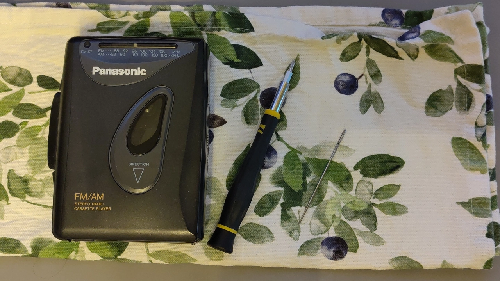

Sony
TC-53

Panasonic
RQ-V60

Sanyo
MGP 27
Sony
TC-53
Panasonic
RQ-V60
Sanyo
MGP 27
Heikko äänenlaatu voi tarkoittaa monta asiaa mutta suurin osa korjauksista ei tarvitse edes laitteen avaamista. Hidannettu äänenlaatu voi tarkoittaa vaan että soittimen patterit ovat lopussa ja soittimen moottori ja lukija eivät saa tarpeeksi virtaa toimiakseen kunnolla.
Jos ääni on rätisevä tai ääni kuuluu vain yhdestä korvasta ongelma voi olla kuulokkeissa tai likaisessa lukija sensorissa. Kannattaa kokeilla monta eri kuuloketta ja jos ongelma on vielä olemassa niin lukija sensorin voi puhdistaa topsipuikolla ja vähän isopropyylialkoholilla. Varmista ettei putsaamisen jälkeen jää kosteaksi alkoholista sillä tämä voi vahingoittaa kasettejasi soiton aikana.
Jos sekään ei auta ongelma voi johtua vahingoittuneesta osasta mikä voi olla vaikea korjata.
Jos musiikki on vain statikkia niin ongelma voi olla syvempi ja laite täytyy avata. Ennenkun laitteen avaa on hyvä huomioida jos soitin ei tee mitään ääniä. Vaikka laitteesta ei kuuluisi musiikkia laitteen pitäisi silti tehdä jonkinlaista ääntä kun soitin on päällä. Jos laitteesta kuuluu mekaanista huminaa niin korjaus voi silti olla helppo mutta jos laite ei tee mitään ääntä ongelma voi olla kriittisempi.
Kannattaa tarkistaa ettei patteri kotelossa ole ruostetta koska ruoste voi estää kaiken virran virtaamasta pattereista. ÄLÄ KÄYTÄ RUOSTEENPOISTO AINETTA! sillä se voi olla liian väkevää happoa ja rikkoa patteri kotelon. Sen siaan kannattaa käyttää hammasharjaa ja sitruuna mehua. Soitin voi silti toimia pienellä määrällä ruostetta.
Jos soittimesta kuuluu mekaanista huminaa niin tarkista jos kasetti silti kelaantuu kun pistät soittimen päälle. Jos kasetti pyörii niin ongelma voi kasetti lukijassa mikä on vaikeampi kojata.
Jos kasetti ei pyöri niin soittimen hihna voi olla vaan pois paikoiltaan. Tämä on yleisin syy soittimen toimimattomuuteen.
Helpoimmat ongelmat saat hoidettua vain pienellä ristipää ruuvimeisselillä ja neulalla jos et yletä ahtasiin alueisiin. Soitin on hyvä pitää pehmeällä alustalla ettei mitään kolahda pahasti.
Vakavempiin ongelmiin voi olla tarvetta juotosrautaan mutta siihen ei tällä sivustolla avusteta.
Huomaa että nämä soittimet ovat hyvin vanhoja ja herkkiä joten rauhallinen ja varovainen käsittely on parasta

Temp text

Sony walkman TC-53 on kaikista soittimista tällä sivulla inhottavin korjata. Soittimen avaaminen vaatii kaikkien soittimen sivujen avausta (paitsi ylätasoa missä napit ovat).
Kun olet ruuvvannut pois kaikki muoviset sivut voit alkaa ruuvaamaan irti kaksi ruuvvia emolevyssä jotta saat kaksi emolevyä irti toisistaan. Emolevy ei tule irtoamaan helposti vaikka ruuvit otettaisiin pois.
Liikuttele emolevyä hellästi jotta saat emolevun käännettyä toisen emolevyn viereen. Huomaa että emolevyt ovat edelleen kiinni toisissaan johdoilla. Älä anna näiden mennä rikki.
Kuvassa on tarkennettu soittimen hihnat. Jos huomaat että sinun soittimessa joku näistä hihnoista olisi rikki soitinta ei voi korjata ilman uutta hihnaa mikä voi olla vaikea löytää.
Jos sinun hihna on vaan pois paikoiltaan voit varvovaisesti pistää hihnan paikoilleen ja koota soittimen takaisin kiinni.
Jos soittimessa näkyy vaurioitunut osa tai johto niin osa täytyy vaihtaa ja juottaa.
Johdot tai esimerkiksi kondensaattorit voivat olla mahdollista vaihtaa mutta asiat kuten moottori tai lukija sensori voi olla vaikeampi vaihtaa ilman täysin samanlaista osaa.

Temp text